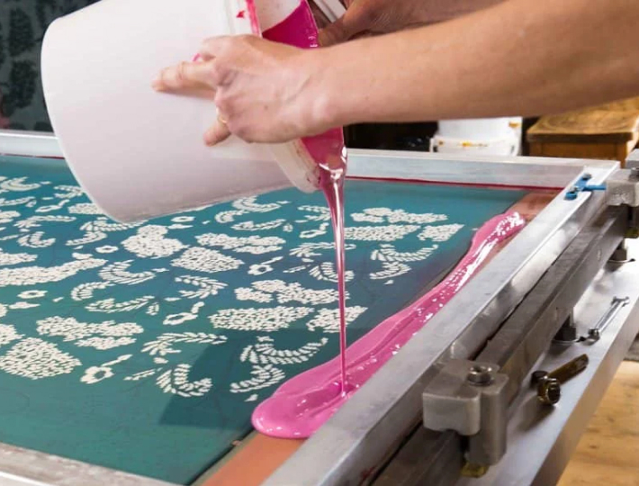

Rasi's Array of Screen Printing Techniques
Dive into the world of possibilities with Rasi's diverse range of screen printing techniques. From traditional methods to cutting-edge innovations.



Traditional Textile Screen Printing
This method is extensively employed in the fashion and apparel industry for printing designs onto garments, fabrics, and accessories.
Advanced UV Screen Printing
UV screen printing has gained popularity due to its ability to cure instantly when exposed to ultraviolet light, resulting in fast production.
Four-Color Process Printing
Also known as CMYK printing, this method is widely used for reproducing full-color images with a broad range of tones and gradients.